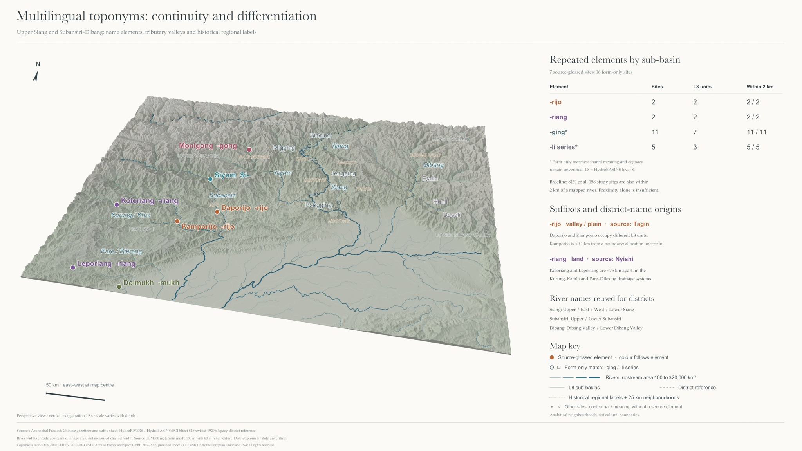

01 / GIS in Himalayan Regional Studies
Corridors before Borders
A study of the cartographic legacy of the Survey of India and the Royal Geographical Society in the eastern Himalaya.
Conference Project · ACPSS 2026

Koloriang and Leporiang lie about 75 km apart in different river basins. Both names contain the Nyishi element -riang, meaning “land.” I recorded each appearance of a place name on a historical map separately, keeping variant spellings and uncertain matches in a gazetteer of 1,582 records.
Read the maps and gazetteer ↗